| [ Previous ] [ Contents ] [ Next ] | Jazz++ Manual |
The trackwindow shows bars and tracks of your song while the \helpref{pianowin}{pianowin} shows single events of one track. Events are shown like bar codes, i.e. every event is shown as a short vertical line.
\begin{figure} \latexonly{
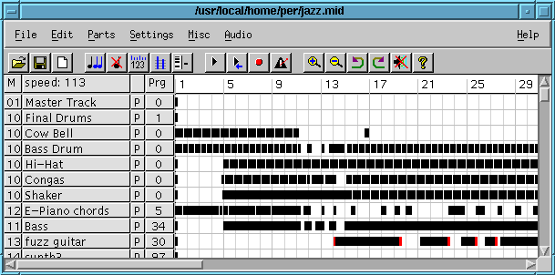
} \htmlonly{\image{0cm;0cm}{trackwin.png}} \caption{Track window} \end{figure}From left to right there are the following buttons:
\begin{figure} \latexonly{
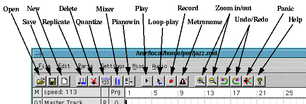
} \htmlonly{\image{0cm;0cm}{twtoolb.png}} \caption{Track Window Toolbar} \end{figure}Many functions (e.g ’Delete’ from the edit menu) require that you have selected some range of bars and tracks that will be affected by the selected operation. You can drag a rectangle to select a range. Holding the shift-key down while pressing the left mouse button will continue a selection. This way, you can select a range bigger than the window by continuing a selection after scrolling. Alternatively, you can click into the leftmost column to select a whole track.
The selection indicates a range of tracks (y-axis) and a range of bars (x-axis). These values are copied to the Event filter from Settings-Menu. In the event filter you can specify more precise, which events shall be worked with.
Example: To delete all events but program changes from bar 5 to 15 on track 1 to 3, mark bars and tracks by dragging a rectangle. Then select the event filter and disable program-changes (patch). Finally select Delete from Edit-Menu.
\begin{figure} \latexonly{
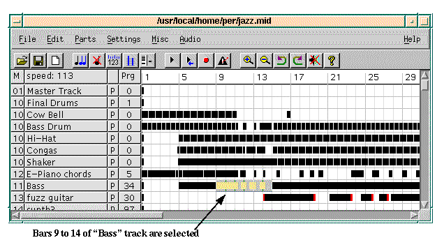
} \htmlonly{\image{0cm;0cm}{twselect.png}} \caption{Selecting events} \end{figure}\begin{figure} \latexonly{
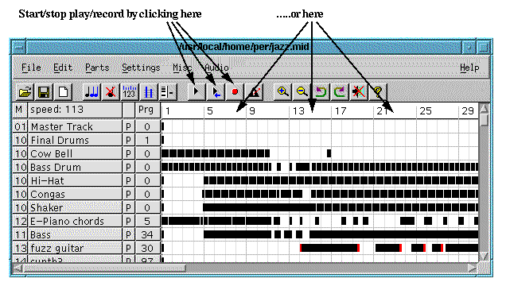
} \htmlonly{\image{0cm;0cm}{recplay.png}} \caption{Record and play} \end{figure}There are 2 play modes
Each of the play modes has its own toolbar button. The buttons act both as start-play and stop-play. After using JAZZ++ for a while you will probably find it more convenient to start/stop play by clicking in the top line of the Trackwindow. Play will then start at the bar where you click. Loop play can also be done from the top-line by pressing shift-click.
Recording is done by pressing the record button after selecting some bars in a track. The recorded events will be merged into the selection. You can also start recording by clicking in the top-line of the Trackwindow (some bars must be selected). If you start record with the right mouse button, the track will be muted before play starts and existing events in the selection will be replaced by the recorded events.
For a step-by-step tutorial on how to make a midi song from scratch, look at \helpref{How to build a new midi song}{exmidisong}.
The metronome button can be toggled on and off. See also \helpref{Metronome settings}{metroset}.
A single click with left/right mouse button into the speed field will increase / decrease the speed by one beat / minute. Keep the mouse button down to make bigger changes. Hold down the shift key to change values in steps of 10 bpm.
\begin{figure} \latexonly{
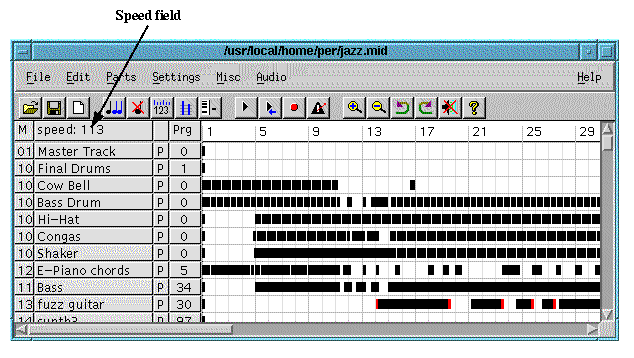
} \htmlonly{\image{0cm;0cm}{speed.png}} \caption{Speed adjustment} \end{figure}Clicking at the top of the column named Prg cycles through the available defaults (Prg = program change, Bnk = program bank (used in combination with Prg for GS and XG sounds), Vol = volume, Pan = pan, Rev = reverb, Cho = chorus). These events are sent before play starts. To adjust a value, click left or right mouse button to increase or decrease the value (use the shift key for quick increase or decrease). A value of 0 means there is no event to be sent. Please note that the defaults can also be edited (graphically) in the \helpref{Mixer dialog}{mixer} selected from the \helpref{mixer toolbar button}{twtoolbar} or the {\em Parts} menu.
Clicking the unnamed column containing P’s toggles the Trackstatus: P=play, S=solo, M=mute.
Clicking into the top of the leftmost column (labeled ’M’) toggles display of midi channel and track number.
\begin{figure} \latexonly{
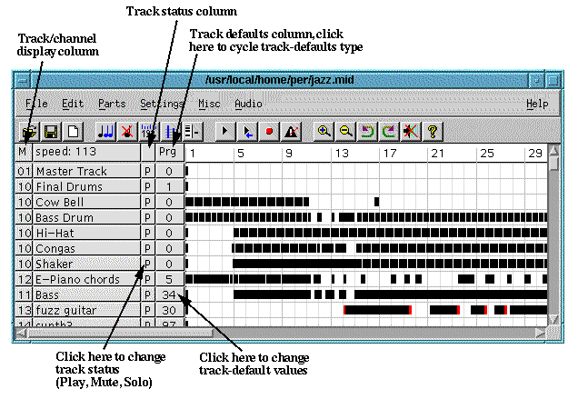
} \htmlonly{\image{0cm;0cm}{trackdef.png}} \caption{Track defaults} \end{figure}Click on the name-field will open a Dialog. You can enter a new name for the track, select the instrument to be played and define default midi channel. If ’force all events to midi channel’ is selected, all existing events on the track will be set to the default midi channel when pressing ’Ok’. Otherwise the midi channel will not affect events already on the track.
\begin{figure} \latexonly{
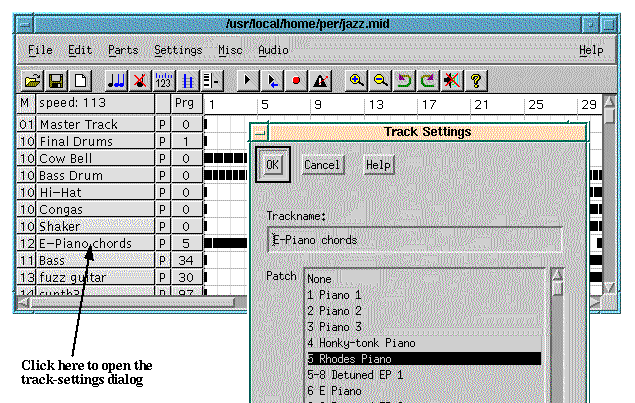
} \htmlonly{\image{0cm;0cm}{tracknam.png}} \caption{Track name, midi channel etc.} \end{figure}A whole track can be moved by clicking the right mouse button into the track-name field, drag down/up to the destination and then release the mouse button (drag and drop).
This enables you to cut or copy some part of a song into an internal buffer and paste it to another position of the song again. This can be used to copy events from one song to another.
Do do this, \helpref{select}{select} some events and then select Cut or Copy from the edit menu. To paste the events select paste from the edit menu and click to the destination track/bar. To abort a paste operation click with the right mouse button somewhere. Pasted events are merged with existing events, so you may want to erase the destination tracks before pasting.
\begin{figure} \latexonly{
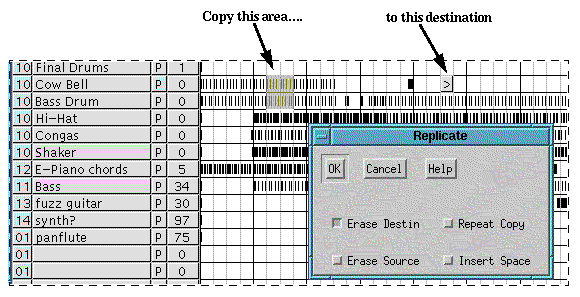
} \htmlonly{\image{0cm;0cm}{replic.png}} \caption{Replicate dialog} \end{figure}To replicate (copy) some events, you must first \helpref{select}{select} an area. Then, after you have invoked {\em Edit$->$Replicate} (or pressed the \helpref{replicate button}{twtoolbar}), your cursor will change to a ’$=>$’, meaning that you should mark a destination for the selected area (clicking with the right mouse button will abort replication). After clicking destination position, you get a dialog box. The meanings of the different check boxes are:
Source and Destin may overlap.
\begin{figure} \latexonly{
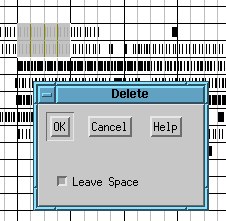
} \htmlonly{\image{0cm;0cm}{delete.png}} \caption{Delete dialog} \end{figure}To delete some events, you must first \helpref{select}{select} an area. Then, after you have invoked {\em Edit$->Delete$} (or pressed the \helpref{delete button}{twtoolbar}), you get a dialog box. The check box ’Leave space’ has the following meaning:
Quantize will put Note-On events in the selected area ’in time’ (moved to the nearest step-timing value). Only Note-On events are changed.
\begin{figure} \latexonly{
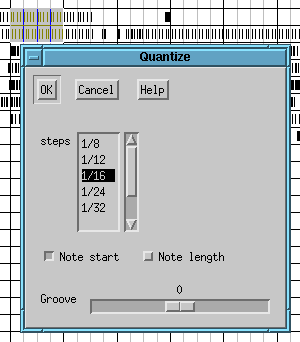
} \htmlonly{\image{0cm;0cm}{quantize.png}} \caption{Quantize dialog} \end{figure}To quantize some events, you must first \helpref{select}{select} an area. Then, after you have invoked {\em Edit$->$Quantize} (or pressed the \helpref{Quantize button}{twtoolbar}), you get a dialog box. The ’steps’ listbox represent the ’granularity’ of the quantization, and should normally correspond to the smallest note-timing value of the music to be quantized. The checkboxes control whether the start of the note or the end of the note (or both) should be quantized.
There is also a slider named ’Groove’ that can be used for quantizing notes ’off beat’. A value of e.g. +20 means that the notes are moved to the nearest step-timing plus 20 percent of a step-value (notes will sound a bit ’late’). A negative value will make notes sound a bit ’early’. For normal quantization the value should be 0.
The selected events will be set to the selected MIDI Channel.
\begin{figure} \latexonly{
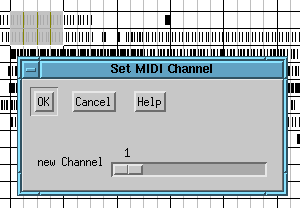
} \htmlonly{\image{0cm;0cm}{setchan.png}} \caption{Set MIDI channel dialog} \end{figure}\begin{figure} \latexonly{
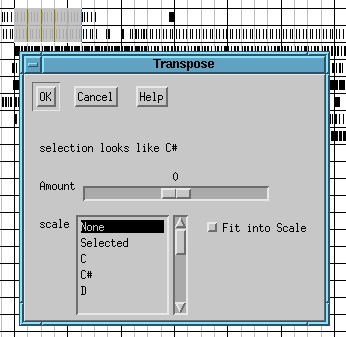
} \htmlonly{\image{0cm;0cm}{transpos.png}} \caption{Transpose dialog} \end{figure}If no scale is selected, Amount is the number of semitones to transpose, e.g. an Amount of 1 will change C to C#, C# to D etc. If the scale C is selected, C will become D, D will become E, E will become F etc. JAZZ++ tries to analyze the key of the selection and displays it in the dialog.
The scale ’selected’ is the set of notes in the selection. If eg the selection contains the notes C, D, E an amount of 1 will change C’s to D’s, D’s to E’s and E’s to C’s. Its useful in the piano window create inversions of chords.
Fit into scale with an amount of 0 will change all notes to the nearest one contained in the selected scale. If eg the selection contains some C# and you select C scale, all C#’s will become C’s (D would be possible too, but transpose down is preferred in this case). If amount is not 0, the selection is transposed in semitones first and ’Fit into scale’ afterwards.
Only Note-On events are changed.
\begin{figure} \latexonly{
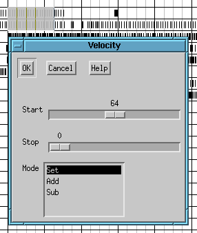
} \htmlonly{\image{0cm;0cm}{veloc.png}} \caption{Set velocity dialog} \end{figure}Changes the velocity of Note-On events. If Stop is 0, all Note-On events will get the Start velocity. If Stop is greater 0, events at the beginning of the selection will get the Start velocity, those at the end will get the Stop velocity (e.g. crescendo). The choice Add/Sub/Set determines, how the value is applied.
Adjust length of Note-On events. see \helpref{Velocity}{veloc}.
\begin{figure} \latexonly{
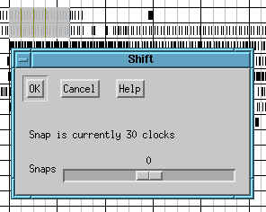
} \htmlonly{\image{0cm;0cm}{shift.png}} \caption{Shift dialog} \end{figure}Moves events left or right in amounts smaller than a bar. The snap value is adjusted in the pianowin.
\begin{figure} \latexonly{
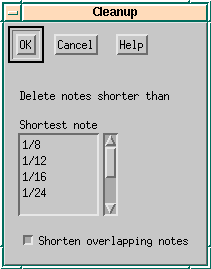
} \htmlonly{\image{0cm;0cm}{cleanup.png}} \caption{Cleanup dialog} \end{figure}Deletes note-on events that are shorter than a selected length. Optionally shorten notes to insure that notes of the same pitch does not overlap.
Accidental keyboard hits often leave very short notes on the track that distorts the music. Another problem is that two overlapping notes of the same pitch causes the second note to stop sounding (because of the note-off event from the first note). This cleanup function effectively solve such problems.
\begin{figure} \latexonly{
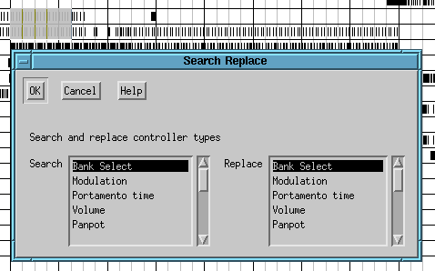
} \htmlonly{\image{0cm;0cm}{search.png}} \caption{Search Replace dialog} \end{figure}Searches for controller events and changes the controller number, eg transforms modulation wheel to volume.
This menu deals with all kinds of instrument settings, or {\em parts} settings. Some of the parameters will work with almost any General Midi (GM) equipment (like Volume settings) while others only work with GS- or XG-compatible synthesizers. The number of selectable menu entries will vary depending on the \helpref{synthesizer type}{synthtype} settings.
Please note that some menu entries may have no effect on your equipment even if selectable. In some cases special {\em system exclusive} message needs to be sent first in order to enable the specific feature (see \helpref{Edit/create single events}{pweventedit} on how to create a system exclusive event). In other cases the equipment just doesn’t support the feature. Please consult the owner’s manual of your sound generator for more info.
All parameters are operated with sliders per track (part). Note that for some platforms the number of adjustable parameters are restricted because of the size of the dialogs.
Please note that only one {\em parts} dialog can be opened at a time.
Setting of default {\em Volume}, {\em Pan}, {\em Reverb} and {\em Chorus}.
\begin{figure} \latexonly{
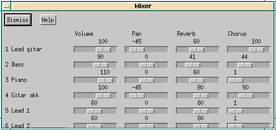
} \htmlonly{\image{0cm;0cm}{mixer.png}} \caption{Mixer window} \end{figure}Sound dialog - change sound color:
Vibrato dialog - change the way the tone’s vibrato develops in time:
Envelope dialog - change the way the tone envelope (amplitude) develops in time:
Controllers are:
All the controllers have three associated types dialogs with sliders; {\em Basic}, {\em LFO1} and {\em LFO2}. The settings tell how much the controller will trigger the sound-change described by each parameter. Parameters are:
The {\em Basic} dialogs of the {\em Continuous Controller} entries also has a {\em Controller Nr} dialog to set what continuous controller the part will respond to.
This is a dialog for controlling different parameters of the individual drum instruments of the primary drum part. The track selected is the first track with channel equal to the {\em .drumchannel} setting (in the configuration file ). Note that the name of the track also has to be set.
Drum instruments are listed in a list box. The sliders are valid for the instrument currently selected from the list. Listed instruments to be controlled are added/deleted by using the {\em Add} and {\em Del} buttons.
The controllable parameters are:
Sound generators have a limited amount of tones that can be played simultaneously. This is sometimes referred to as ’maximum polyphony’. When the maximum polyphony is exceeded the synthesizer will start cutting tones, which can cause audible ’distortion’ to the music.
In some GS equipment you can assign the number of tones (oscillators) that is assigned to each part (channel) and thereby control which instruments are ’more important’. This is what this dialog is for.
Here you can set two things:
Using the ’event filter dialog’, you can specify what types and ranges of events that will be affected by \helpref{selection}{select} operations like e.g. ’Delete’ and ’Replicate’.
\begin{figure} \latexonly{
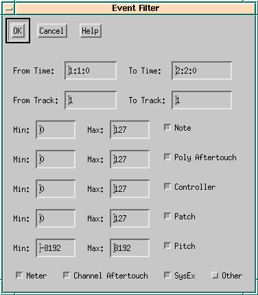
} \htmlonly{\image{0cm;0cm}{filter.png}} \caption{Event filter dialog} \end{figure}The entries {\em From Time}, {\em To Time}, {\em From Track} and {\em To Track} are automatically set by selecting a range with the mouse.
The checkboxes {\em Note}, {\em Controller}, {\em Patch} (Program Change), {\em Pitch}, {\em Meter} and {\em Other} decide whether these event types should be included in the selection. For the first four event types you can also specify more closely which values will be included.
By default, all ’boxes’ except {\em Other} are checked, leaving e.g. {\em Tempo} events unchanged by selection operations.
\begin{figure} \latexonly{
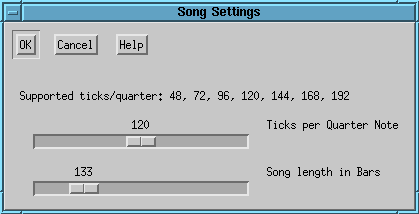
} \htmlonly{\image{0cm;0cm}{songset.png}} \caption{Song settings dialog} \end{figure}Here you can adjust the overall resolution of the song in ticks per quarter. The native JAZZ++ driver (MPU-401) supports distinct values only. With OSS and on MS-Windows you can use any value here. If you change this value, all event timings are recomputed.
A big value of ’ticks per quarter’ means that the time resolution of the notes in the song will be better, but the strain on the sequencer system will also increase. Many people think it is important to have a big value here, while others say you won’t hear the difference. We recommend you to use the default value (120 ticks per quarter) which gives sufficient resolution for any ’normal’ midi song.
In this dialog you may also set the maximum length of the song in bars. This value is used to set the scrollbars in the track and piano windows.
\begin{figure} \latexonly{
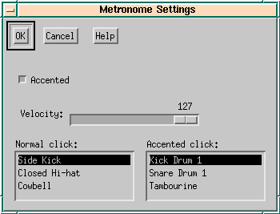
} \htmlonly{\image{0cm;0cm}{metroset.png}} \caption{Metronome settings dialog} \end{figure}Adjust metronome instruments and velocity.
An “accented” metronome means that the first count of a bar sounds different than the other counts.
Adjust GS or XG effect settings. In XG mode, also equalizer settings can be chosen.
In GS mode, effects can be adjusted in two modes dependent on the settings of the ’Use effect macro’ and ’Use chorus macro’ checkboxes:
Macro mode will be sufficient in most practical cases. Setting of individual parameters is more difficult, but can give very good results when done right.
The mode settings (position of the checkboxes) can be saved with the "Save settings" menu entry. The current values of the listboxes or parameter sliders are stored in the midi file.
Controls clock source and real-time output.
The available choices of {\em clock source} will vary depending on system platform:
How to sync?
To play, enable "Song pointer" sync mode in sequencer (JAZZ++), start play on sequencer first, then start tape at any point in the song. The sequencer is now locked to the movements of the tape. (Note that some sync boxes don’t send song-pointer at beginning of the song. In this situation you must manually start sequencer at song-start before running tape.)
To play, set sequencer to MTC sync mode, start play on sequencer, then start tape at any point in the song. The sequencer is now locked to the movements of the external device.
To play, set sequencer to FSK sync mode, start tape in the pilot-tone area, then start sequencer before pilot tone ends. (Note that with FSK play must always start at beginning of the song.)
The "Realtime to Midi Out" choice is useful for syncing another sequencer to this one or to record a "songpointer stripe" to tape via a sync box. Note that "Realtime to Midi Out" will only work properly for a ticks-per-quarter resolution dividable by 24 (see \helpref{Song settings}{songset}).
When enabled, the sequencer will send all notes received on the MIDI IN port to the MIDI OUT port. This basically means that you will hear what you play on the keyboard.
\begin{figure} \latexonly{
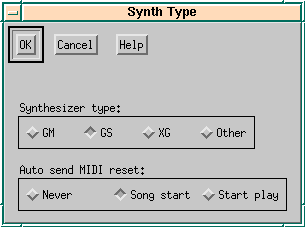
} \htmlonly{\image{0cm;0cm}{syntype.png}} \caption{Setting of synthesizer type} \end{figure}Many MIDI sound generators (a synthesizer, soundmodule or soundcard) offer possibilities to choose an extended number of instruments (more than the 128 General MIDI instruments), or to control things like sound colour, reverb/chorus settings or time-variant filters. This is done by sending specific MIDI commands from the sequencer (bank-, NRPN- and SYSEX-events). However, the parameters of these commands are different depending on which standard your sound generator supports.
To allow JAZZ++ to get the most out of your MIDI sound generator, you should choose the synthesizer type option that corresponds most closely to your equipment.
Options are:
The ’Auto send MIDI reset’ options control the conditions for when JAZZ++ should send a MIDI reset command (corresponding to the synthesizer type) to the synthesizer device.
Files saved from JAZZ++ will always contain a MIDI reset near the beginning of track 0.
You may select the input and output devices from the list of installed drivers.
Undo or redo the last operation. The last 20 operations can be undone/redone.
{\em Split tracks} places all events from track 0 to track 1..16 depending on the midi channel (useful for ’decoding’ a format 0 midi file).
{\em Merge tracks} moves all events to track 0 (not so useful as JAZZ++ only saves file format 1).
\begin{figure} \latexonly{
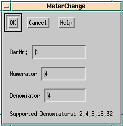
} \htmlonly{\image{0cm;0cm}{meter.png}} \caption{Meter change dialog} \end{figure}Changes the meter (counts per bar and note-value of each count) starting from specified bar to the end of song or to the next meterchange. {\em Numinator} is the ’counts per bar’, while {\em Denominator} is the ’note-value of a count’.
Meterchange events are placed on track 0 always.
Sends an initialize message (either ’GM ON’, ’GS ON’ or ’XG ON’) to the midi port. If \helpref{synthesizer type}{synthtype} is correctly set, most sound generators will initialize to default values when such a message is sent.
\begin{figure} \latexonly{
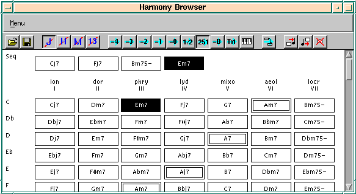
} \htmlonly{\image{0cm;0cm}{hb.png}} \caption{Harmony browser} \end{figure}\begin{figure} \latexonly{
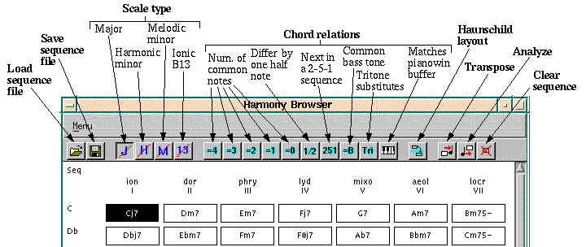
} \htmlonly{\image{0cm;0cm}{hbtoolb.png}} \caption{Harmony browser toolbar} \end{figure}The harmony browser shows the 4-tuned JAZZ++ harmonies of the four scales types major, harmonic minor, melodic minor and harmonic major.
The first thing you can do is to click on chords and listen how they sound (eg examples from a song book or a book about harmony theory). The selected chord is placed into the pianowin copy buffer and can be pasted into your song (see \helpref{mouse actions}{mouseact}.
The harmony browser is also able to analyze a section of your song and to transpose parts of your song into new scales and chords. Also you may generate chords thru the random rhythm generator into your song.
What you can do with the mouse:
There is a toolbar with the following icons (from left to right):
The following five Icons (with the cyan right arrow and the piano) specify what related chords are marked when you select a chord:
If the piano button is not selected, the harmony browser works the other way round. Whenever you select a chord, the chord is placed into the pianowin buffer so you can paste it into your song. The parameters (midi channel, length etc) can be set in the midi-entry of the harmony browser menu.
The last four buttons do different things:
{\bf Haunschild layout} shows harmonies and scales in an order proposed in a book about harmony theory by the German author Haunschild. If selected, chords are shown in a way that ’valid moves’ are
{\bf Transpose} lets you change parts of your song to the harmonies and chords of the chord sequence. When you select some bars in the trackwin and click on transpose, then the selection is mapped to the chord sequence. The default is, that on chord lasts one bar, but you may change this in the settings menu in the harmony browser. If the results are not satisfying, you should try to transpose track by track, this often works better. All in all, transposing works better, when the selected material is not too complicated.
I had nice results with the following procedure: I recorded (very slow, as I am not a good piano player) cj7 chords on one track, some monphone bass line on the second track and a solo on the third track. Everything was in c major (white keys only). Then I selected some chords and transposed each track on its own.
{\bf Analyze} Tries to find the chords and scales from the selection in the trackwin. Again, the default is one harmony per bar which can be changed in the settings menu. The algorithm looks at the length of the notes and chooses the longest notes to be the notes of the chord.
{\bf Clear chord sequence} removes all chords from the chord sequence.
{\bf Menu entries}
{\bf Generating chords with the random rhythm generator}
After defining a chord sequence, you may open the random rhythm generator. When adding an instrument, it will show (beside drums) the instrument ’chords from harmony browser’. You select it and define a more or less randomized rhythm and proceed as described \helpref{here}{randrhy}.
This one is somewhat difficult to explain, but its probably the most interesting feature of the Harmony Browser. Lets assume, you have a sequence of 4 chords. Then you select 4 bars in the track window (all tracks) and you press the transpose button. Now, the Harmony Browser tries to change the harmonies and scales from the trackwindow selection into the selected chords.
The algorithm looks at the first bar from the trackwin selection and sums up the length of all different notes. It assumes, that the 4 notes with the largest sum of length are the chords present in the song and changes them to the 4 notes from the first chord of your chord selection. Afterwards, the remaining notes from the trackwin selection are mapped to the remaining notes of the scale the chord was taken from.
\begin{figure} \latexonly{
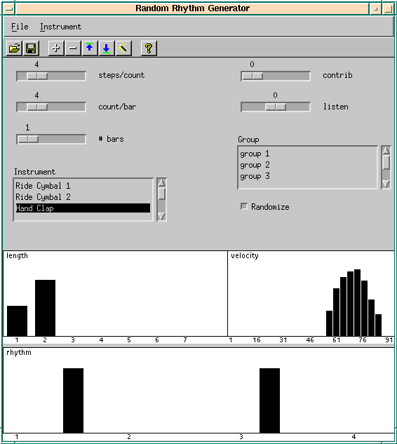
} \htmlonly{\image{0cm;0cm}{rrg.png}} \caption{Random rhythm generator} \end{figure}\begin{figure} \latexonly{
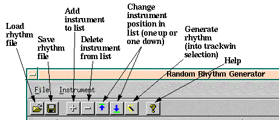
} \htmlonly{\image{0cm;0cm}{rrgtoolb.png}} \caption{Random rhythm generator toolbar} \end{figure}This dialog generates rhythms from some kind of statistical specification. You define probabilities for timing, velocity and note-length and from these the rhythm is generated.
With the three sliders you specify the meter and (with # Bars) how many probabilities you want to define. Next, you can add or remove instruments to the listbox. Then you specify the probabilities for rhythm, velocity and length for each instrument.
Probabilities are set with the mouse where
In the rhythm field you specify the probabilities for every time position. A high value means a high probability that the instrument is played definitely at that time. A low value means, that the instrument {\em may} be played at that time. By adjusting high values only, you can specify a definite rhythm without any randomization.
The velocity (and length) values are looked up by the generator, whenever it decides to play a beat. It chooses one value from 1..127 (x-axis, 1..8 for length) where positions with high probabilities are chosen more often.
If the chosen length is greater than 1 step, there are no more events generated until the note quits, even if there are high probabilities in the rhythm field. You can abuse this, to make sure that there are not too many events generated (example: you have rhythm probabilities at step 4 and 5, but you want exactly {\em one} beat to be played at either of these. Specifying a length of 2 will do this, if step 4 is chosen, there cannot be an event on step 5). The length may also be used for rhythms where you want to have random intervals between the beats but you are not interested in the absolute timing positions of the beats. Look at the cowbell definition in the rrg1.rhy example for this.
We had the best results with the following: define every instrument twice. In the first definition, select high probabilities on a few timing positions together with high velocities, this makes the base groove - it is loud and does not change very much. In the second definition, have little probabilities on many timing positions with a low velocity, this makes randomized background fills, which make the whole thing more interesting and that do not override the base groove because of the low velocity.
Aside from drums there are some special ’Instruments’ you can select:
The events selected in pianowin are copied to an internal rhythm buffer, so you may define multiple rhythms with different pianowin selections.
To generate, you select some bars on one track in the trackwin and press the gen button.
If the checkbox ’randomize’ is not selected, the velocity and length fields are disabled. The rhythm is generated from the rhythm field only. Every position with a bar height greater 0 gives a beat, the height of the bar is the velocity.
Up to now every instrument has its own probability definition and plays on its own without listening to the other instruments. By defining groups, instruments can play a little more ’together’. Some instruments contribute their rhythm to a group and others listen to the group and play accordingly.
The contributors contribute their actual rhythm to the group, so the group maintains its own rhythm that is something like the sum of the rhythms of all contributing instruments.
The listening instruments modify their probabilities according to the rhythm of the group. If the listen value is greater 0, then the instrument will play at the same timing positions as the group rhythm. If the value is negative, the instrument will play at the timing positions where the contributors do not play.
The algorithm evaluates the instruments in the order they appear in the list. So contributors should be defined before listeners so its actual rhythm will be known to the listener. If a contributor is defined after a listener, the listener will listen to what the contributor played in the previous bar. An instrument may be listener and contributor at once.
Example 1: There are three different conga instruments: muted, high and low and you want them to play exclusively (only one instrument at a time). The first in the instrument list (eg the muted conga) will play its rhythm and contribute it to a group. The next instrument (e.g. high conga) will listen to the group with a value of -100, so it will play on those positions only where the muted conga does not play. It will also contribute its rhythm to the group. The third instrument (e.g. low conga) will also listen with a value of -100 so it will play only on positions, where none of the others play. See rrg2.rhy for an example of this.
Example 2: The open hi-hat shall go on some of the positions where the bass drum plays, it shall not play alone (without bass drum). In this situation the bass drum will contribute its rhythm to a group and the open hi-hat will listen to the group with a value of +100.
This dialog allows to modify velocity, note length, note pitch and note start. We’ll explain this dialog by an example: Select length as ’Source’ and velocity as ’Destin’ and select some tracks in the trackwin. In the lower part of the dialog you can paint some kind of curve now, see section \helpref{Random Rhythm}{randrhy} for details.
When you press the Apply-Button the following happens: for every note on event, JAZZ++ looks at its length and looks up the length on the x axis of the curve. Now it looks at the curve and finds the corresponding value at the y-axis. This value is assigned to the velocity of the note on event. So, if you draw a diagonal line from bottom left to top right, short notes will get a low velocity and long note will get a high velocity.
For rhythm this is analogous: the mapper looks up the start time in the x axis and takes the value from the height of the corresponding bar.
When using random as ’Source’ things are a bit different. The y-axis shows probability values now and the x-axis shows possible Destin values. JAZZ++ chooses for every note-on a new destin value - one of all the values shown on the x-axis. But those values, with a high probability are chosen more often, values with probability 0 will never be chosen.
The switch ’Add value’ means, that the Destin value is added to the existing value and the value is not replaced. You can subtract values too by adding negative Destin values.
The rhythm and random features are probably the most interesting. The rhythm allows, to adjust velocity to a certain groove and random allows to ’humanize’ midi events, add some very small timing inaccuracy or velocity changes.
With this dialog you can rearrange parts of your song based on random. The selected bars are divided into small segments (default length is 1/4 note). When pressing OK, jazz rearranges these segments in random order. Also, some of the segments may be chosen more than once while other segments do not appear at all. Options are:
See the song/shuffle directory for an example. Load shuffle0.mid, then mark from 5 to 24 on tracks 5 to 8 (chords, ..., muted gt). Select Shuffle from the misc menu. Set the segment size to 1/4 note and set the trackmode to ’one track at a time’. Then press ok. This should give you something similar to shuffle1.mid. The song shuffle2.mid was generated from shuffle0.mid by deleting the tracks 5 and 7 (marimba and brass). To delete a track, click on its name and check the field ’Clear track’ at the bottom of the track dialog. After clicking OK, you can drag the empty track to a new position with the right mouse button. To get shuffle2.mid set the segments size 1/8 note.
With this dialog you can generate melodies, bass lines or chords. In general it works as follows: first it generates a small piece of melody, the seed. Then this seed is repeated several times and each time some variations are applied to the seed. Finally the melody is mapped to the harmonies using the Harmony Browser. See the description of the \helpref{Random Rhythm Generator}{randrhy} for additional information. Adjustable:
Please take a look at the examples in the song/rmg directory. To generate a new melody for example 1, do the following:
In this window, you can edit events like text. When the window is opened, JAZZ++ translates the selected events into a text form. You can edit this text in the Event List Editor and finally convert it back to midi events.
The Event List Editor allows to filter events. The Editor will show only those events that are currently enabled in the \helpref{Filter Dialog}{midifilter} in the Settings menu. As we already know, changing the filter settings affects most of the other edit functions too, e.g erase will erase only those events, that are enabled in the Filter Dialog.
The Event List Editor recognizes the following events:
This dialog generates arpeggios from chords that are already recorded. The generator scans the selected track(s) in the trackwindow. Whenever 3 or more notes sound simultaneously, they are replaced by an arpeggio that consists of the chord notes and their octaves.
You can paint the kind of arpeggio: the x axis represents the time in steps, the y axis the note of the chord. A value of 5 on the y axis means: ’take the 5-th note of the chord’. If the chord does not contain 5 notes, the generator transposes the chord by one octave.
If you check the controller box, you can choose a controller (e.g. panpot). In this mode, the generator does not scan the selection but generates controller events.
Take a look at the examples in the song/arpeggio directory.
There is also a help menu in both main windows.
The help buttons and some of the help-submenus requires access to the wxWin help system. The help system acts a little different dependent on the system platform:
Please observe that the jazz.xlp file does not support graphics. In order to view the help-file images on Unix (can be useful) please use the html- or postscript-versions of the documentation. The html files can be viewed using a standard web browser (like ’netscape’). The postscript file can be viewed using ’ghostview’ or it can be produced on paper using a postcript-capable printer.
| [ Previous ] [ Contents ] [ Next ] |